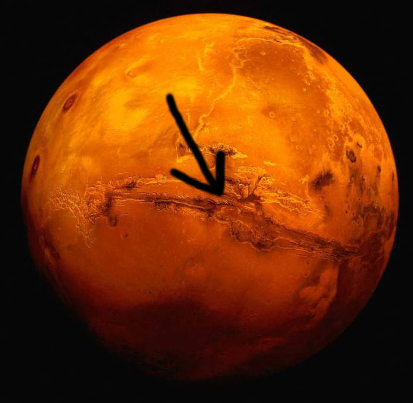
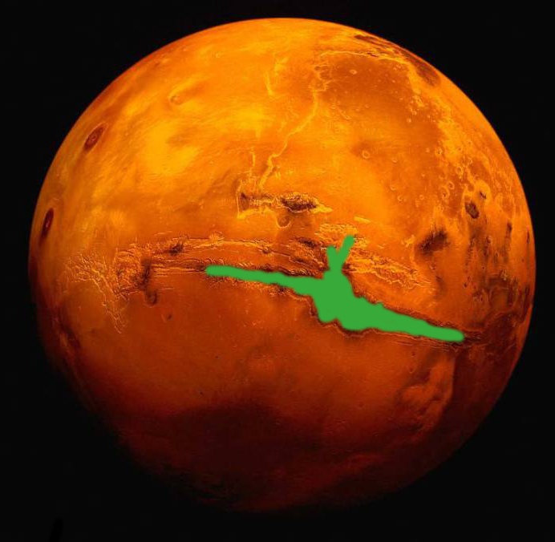
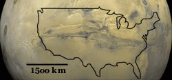

Mars Plans*:
Yo, so Mars has this bomb ass canyon called Valles Marineris, right? It looks like this:

and I think it would be a great place for us to start a settlement on the planet.
I'm thinking we could build biodomes or panels of some sort over the canyon, to enclose it from the martian atmosphere.
At first, we could enclose a little corner of the canyon, and start fostering plant life there. We can create a little green dot on the planet, of human existence.
As our ability to construct biodomes improves, we can expand to wider parts of the canyon.
Valles Marineris is freaking huge. Take a look:

It spans 4000km and can get as deep as 7km. Needless to say, we have room for some giant lakes and some big ass evergreens. This "biodome" could easily sustain its own weather patterns, once we get it started.
Valles Marineris also gives the option of living in vertical cities along the walls of the canyon. We can dig tunnels and live in the sides of the canyon, leaving the rest of the room to grow trees and shrubbery.
*THIS WEBPAGE IS UNDER CONSTRUCTION. CHECK BACK LATER FOR MORE
My bitcoin address: 1Fcu8wPv3vsMXoq5GcS4tucnP49H6FFAZM
Contact me: Dan@SendDanToMars.com